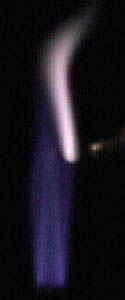

Flame Colors as Chemical Indicators
 |
Though not as definitive as the spectral fingerprints from atomic spectra, the colors produced by chemicals when inserted into a flame can be used to identify some constituents of minerals. One procedure used was to put a small amount of the chemical on a small loop of platinum wire and place it into the open flame from a laboratory burner.
Several types of wire were tried, but all produced prominent colors of their own. Platinum was the only one tried which would glow red hot without producing any appreciable plume of color in the flame. If the platinum wire were touched with your fingers, then you would get a colored plume, notably sodium presumed to come from our hands. After that burned off, just the bright tip of the wire loop was visible.
|
Sodium chloride at left gave the brightest light, much brighter than the blue flame of the burner. The color is visually the same as other sodium lights, coming mainly from the sodium d-lines. The brilliant red of strontium is the most dramatic of the flame colors. At right above is a sample of barium sulfate (barite) mineral, which gave only a small amount of light which was almost white.
All of the above flames were obtained from a natural potassium chloride (sylvite) sample. The two at left are more like the classical textbook colors for potassium. But the variety of colors at right makes it clear why the students argue over whether the color is pink or violet. The flames at right are much brighter, as you can see by comparing their brightness to that of the flame from the burner. It may be that there is some contaminant in those at right, like sodium?
These are flame colors from azurite, a copper-containing mineral. It gave better copper color than malachite, to our surprise.
|

|

|
Potassium chloride in mineral form gave the distinctive potassium color.
|
Index
Chemistry concepts |